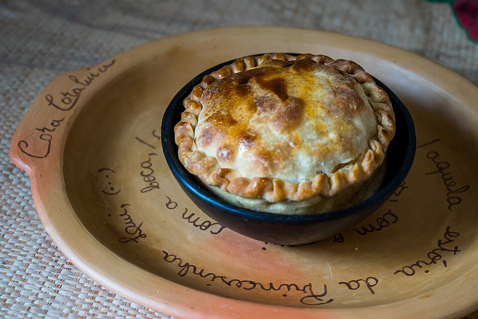

Tortas salgadas
Torta de frango com Catupiry

Ingredientes
- Massa: ½ lata de creme de leite, 4 xícaras (chá) de farinha, 2 ovos, 100 g de margarina, sal
- Recheio: 2 colheres (sopa) de azeite, 1 cebola grande, 2 tomates sem pele/sementes, 1 pote de cogumelo em lâminas, 1½ peito de frango cozido e desfiado, sal, pimenta, salsa, 400 g de requeijão tipo Catupiry, gema para pincelar
Modo de preparo
- Misture a massa; forre forma 22 cm desmontável reservando tampa.
- Refogue cebola, tomate, cogumelo e frango; tempere e misture o Catupiry. Esfrie, recheie, cubra, pincele gema e asse a 200 °C até dourar.